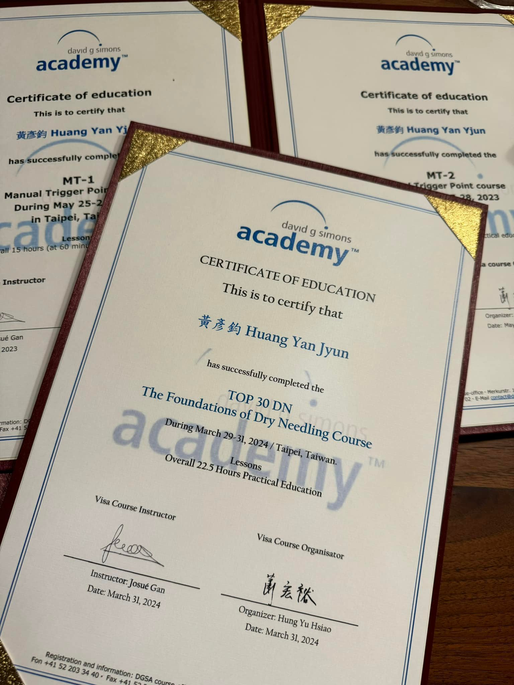
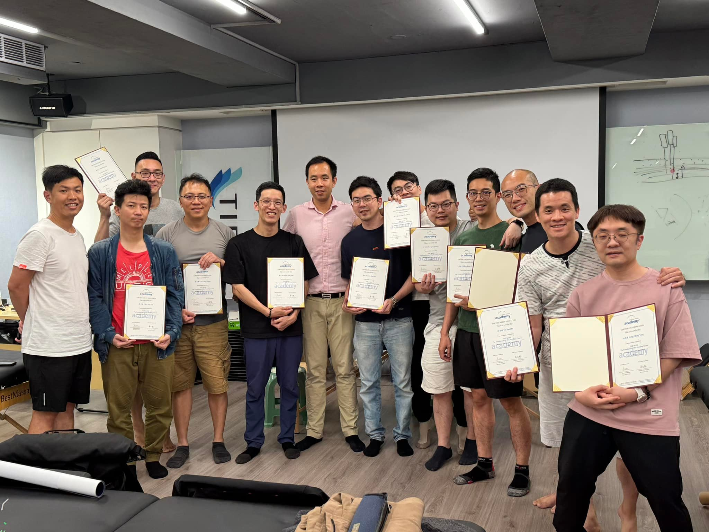
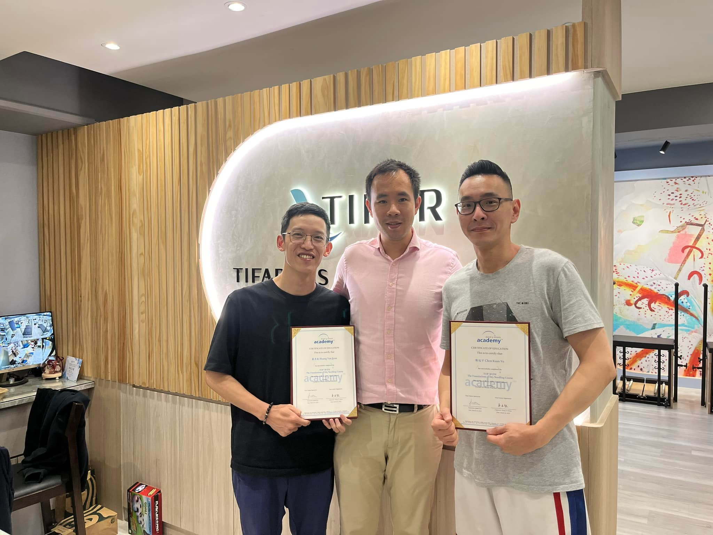
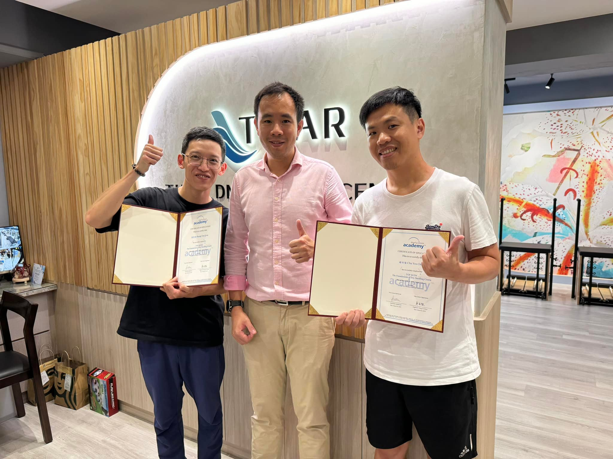

回想從去年接觸到David G. Simons Academy DGSA官方原廠…
回想從去年接觸到David G. Simons Academy DGSA官方原廠的肌筋膜/激痛點Trp手法班MT1+MT2，就註定開啟今日乾針班DN-TOP30的里程碑！
TOP30的官方原廠課在台灣的第一班，揪了身邊的PBCM31的同學好朋友，也揪了太初的中醫安心講堂 褚衍強中醫師與東門的隔壁老陳 冠宇醫師 MD, PT, MSc，上起課來特別好玩！
原廠就是原廠，經過老師手把手的講解與帶領實作，學到了不少很重要但是不好處理的肌群的治療方式，該避開的危險區域、進針必須注意的細節與操作時的細膩，還有對於原理、症狀表現也都有更進一層的了解。
再次強力推薦身為中醫師的各位，可以來學習原廠的課程，我們靈敏的手指與對於針具使用的熟悉度，會讓我們佔有非常好的優勢，增強表面解剖的觸診與肌動學的認識，絕對是現代中醫師必須要會的技能之一！
總算完整學習了整套官方原廠技術課程(MT1-2&DN-TOP30)，再來等通過後續的官方考試後，便可以成為官方認證的國際治療師🤓🤓🤓
帶著滿足愉快的心情下課，即便外頭暴雨狂炸，仍然對於這三天課程回味無窮，最後，感謝宏甫TIFAR邀請原廠的老師來台灣上課，也提供這麼棒的學習環境，很開心能參與到TOP30台灣第一班，這套技術將會一直在我身體裡流動😎😎😎



